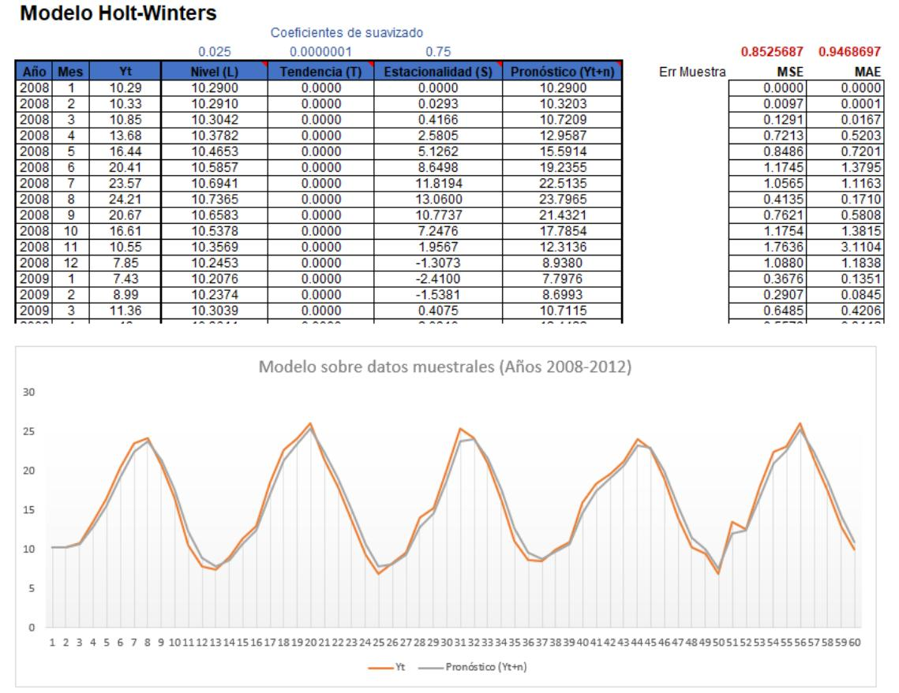

1. Introducción. Contextualización de los datos
La ciudad de Barcelona, ubicada en la costa noreste de España y conocida por su clima mediterráneo, ha enfrentado en los últimos años desafíos importantes relacionados con las temperaturas extremas. Para abordar este fenómeno, hemos seleccionado un conjunto de datos proporcionado por el Servicio Meteorológico de Cataluña. Estos datos incluyen registros de temperaturas diarias de diversas ciudades, pero hemos filtrado el conjunto de datos para centrarnos en la ciudad de Barcelona. El conjunto de datos específico utilizado pertenece a la serie "Observatorio Fabra" con código de serie "Baic0008d", que recoge temperaturas máximas y mínimas diarias desde el año 1950 hasta diciembre de 2023.
El propósito de analizar este conjunto de datos es entender cómo se han comportado las temperaturas en Barcelona con sus datos históricos, con el objetivo de prever la evolución climática futura. La predicción de la temperatura no solo tiene implicaciones directas para la vida diaria de los ciudadanos, sino que también es crucial para sectores estratégicos de la ciudad. El turismo, la salud pública, la eficiencia energética, la planificación urbana, la agricultura y otros sectores clave dependen de contar con datos climáticos precisos para anticipar y mitigar los efectos de variaciones y tendencias climáticas.
Las temperaturas extremas durante los meses de verano podrían afectar negativamente a la industria turística, uno de los pilares de la economía local, al dificultar las actividades al aire libre. Asimismo, la salud pública podría verse comprometida, especialmente en lo que respecta a los colectivos más vulnerables, como los ancianos y niños, debido a olas de calor cada vez más frecuentes. Además, la eficiencia energética se verá afectada por el incremento de la demanda de energía para refrigeración, y las predicciones ayudarán a planificar su uso de manera más eficiente y sostenible. También, la planificación urbana se beneficiará de este tipo de predicciones para adaptar las infraestructuras y aumentar los espacios verdes, mitigando los impactos del calor urbano.
2. Temperaturas medias por meses registradas en Barcelona
Link a gráfico dinámico
3. Métodos de previsión para la serie
Podemos aplicar diversos métodos de previsión, vamos a analizar los candidatos y como basándonos en la teoría podrían ser candidatos para este conjunto de datos de temperaturas en Barcelona:
• Medias Móviles al ser un método de suavizamiento simple podría ayudar a destacar la tendencia, pero es probable que no maneje bien la estacionalidad ni la variabilidad estocástica.
• El método de descomposición podría separar la serie en tendencia, estacionalidad y ruido, lo cual podría ser útil para entender la estructura de los datos, aunque no ser tan eficaz para predecir cambios irregulares en el futuro.
• Holt-Winters suele recomendarse para series con estacionalidad regular y tendencia, ajustando dinámicamente los datos, en este caso podría aplicar muy bien, pero sabemos que puede suavizar demasiado las fluctuaciones extremas.
• SARIMA en teoría debería ser el modelo más robusto para capturar tanto estacionalidad como fluctuaciones no regulares en la serie, haciéndolo más flexible y preciso para series complejas como las de temperatura.
4. Determinación del mejor método de predicción
Los modelos Holt-Winters o SARIMA, deberían de ser los óptimos para el conjunto de datos del que disponemos. Vimos en el anterior ejercicio que estos datos tenían una clara estacionalidad y tendencia observada por el histórico de temperaturas de Barcelona. La elección de componentes o tipos puede llevarnos a mayor dificultad o inviabilidad de ejecutarlo con una hoja de cálculo común. Por ese motivo vamos a ejecutar el siguiente paso con Holt-Winters.
5.1. Predicción de un año (HW con Excel)
Creamos una tabla haciendo el cálculo de Nivel (L), Tendencia (T) y Estacionalidad (S) para hacer el pronóstico de temperatura, aplicando también coeficientes de suavizado para cada uno de ellos.
En la imagen se puede ver también los cálculos de error medio y cuadrático medio para los datos muestrales, contenidos entre el año 2008-2012.
Ajustando coeficientes, encontramos que los errores mínimos a los que llegamos con este modelo son MSE=0.85 y MAE=0.95.
Link hoja de cálculo Para la predicción del año 2013, extra muestral, los errores mínimos a los que llegamos con este modelo son MSE=1.09 y MAE=1.95.
Como disponíamos de los datos observados reales de 2013 también, hemos incluido estos datos en una comparativa con la predicción usando el modelo HW, y aquí podemos comparar en esta gráfica como ha funcionado siendo la línea naranja los datos reales y la línea azul la predicción con este modelo en concreto.
5.2. Predicción de un año (bonus SARIMA)
Añadido a la petición de la actividad y extra a lo que se nos requiere, hemos querido poner en práctica otros conocimientos adquiridos este año en otras asignaturas aplicada a las series temporales y probar un modelo SARIMA mediante programación.
Best model: ARIMA(1,0,0)(2,1,0)[12] Total fit time: 53.720 seconds Mejores parámetros SARIMA encontrados: (1, 0, 0) y (2, 1, 0, 12)
Predicciones SARIMA para los siguientes 12 meses: [ 7.88597887 8.69242673 10.49122182 14.50556055 16.5905548 20.13550412 23.81974048 24.36454762 21.65547903 17.36443842 12.27402975 9.27949536]
Con este código en Python hemos calculado los parámetros óptimos, ejecutado una predicción y pintado este gráfico para 2013 que en el siguiente paso compararemos con HW y con datos reales.
6. Conclusiones
Error absoluto medio (MAE) HW=1.0969 vs SARIMA=1.0183
Error cuadrático medio (MSE) HW=1.9566 vs SARIMA=1.4340
Ambos modelos han demostrado ser buenos para la predicción, cerca de la línea roja de los datos reales. SARIMA ha demostrado aplicar la teoría de ser la mejor opción para capturar fluctuaciones extremas con mejor resultado de MSE y ligeramente mejor a HW respecto a MAE.
Ambos modelos han funcionado bien, pero la determinación siempre de un modelo debe basarse en el objetivo del uso.
Este objetivo es un análisis a largo plazo, analizar efectos en el cambio climático y ser precisos en futuras fluctuaciones, por este motivo y las mejores métricas seleccionamos SARIMA como método óptimo de predicción.
Creemos que en una serie de datos muy larga debemos gestionar fluctuaciones o cambios importantes, el cambio climático podría no seguir un patrón estacional en años futuros debiendo capturar tendencias no lineales ni estacionales además de ser flexibles a alguna irregularidad.